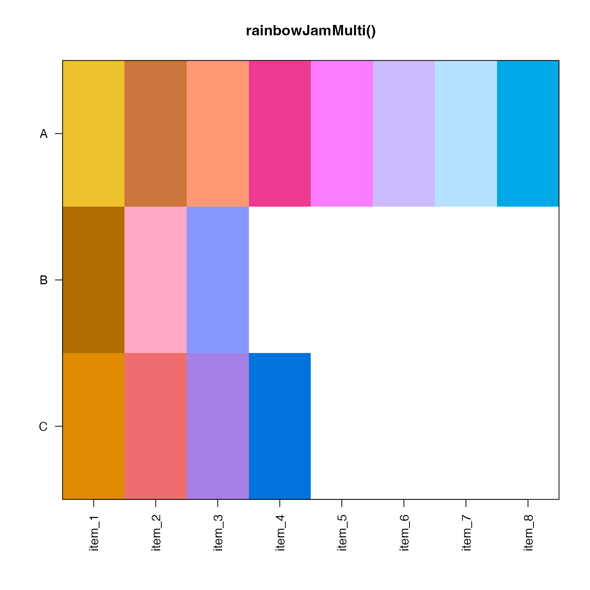
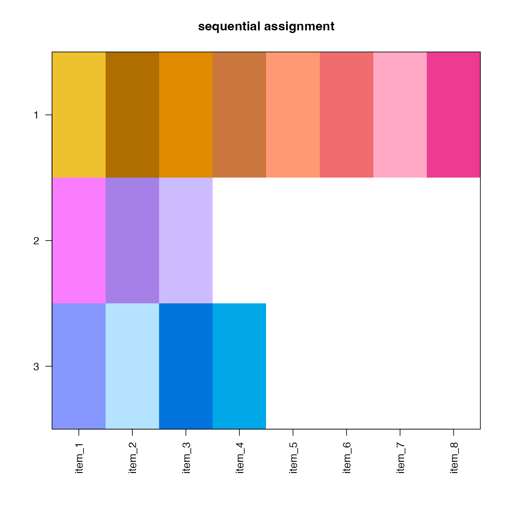

Rainbow categorical colors across multiple groups
Source:R/colorjam-rainbowjammulti.R
rainbowJamMulti.RdRainbow categorical colors across multiple groups
Arguments
- ns
integervector ofnvalues passed torainbowJam().- do_plot
logicalindicating whether to plot the result usingjamba::showColors().- ...
additional arguments are passed to
rainbowJam().
Value
list of categorical colors, length equal to the
input length(ns), with color vectors with lengths ns.
Details
This function applies colorjam::rainbowJam() to multiple
vectors, such that the categorical colors are not duplicated,
and are assigned as well-spaced across the rainbow for
each group as possible.
See also
Other colorjam assignment:
add_colors(),
col_div_xf(),
col_linear_xf(),
color_complement(),
group2colors(),
matrix2heatColors(),
vals2colorLevels(),
vibrant_color_by_hue()
Examples
opar <- par("mfrow"=c(3, 1));
on.exit(par(opar));
ns <- c(A=8, B=3, C=4);
colorlist1 <- rainbowJamMulti(ns,
do_plot=TRUE,
main="rainbowJamMulti()");

# basic assignment in order
colorset2 <- colorjam::rainbowJam(sum(ns));
colorlist2 <- split(colorset2, rep(seq_along(ns), ns))
jamba::showColors(colorlist2, main="sequential assignment")

# re-assign the same colors
colorlist3 <- lapply(ns, colorjam::rainbowJam);
jamba::showColors(colorlist3, main="independent color assignment");
 par(opar);
par(opar);